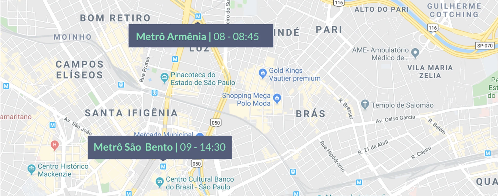
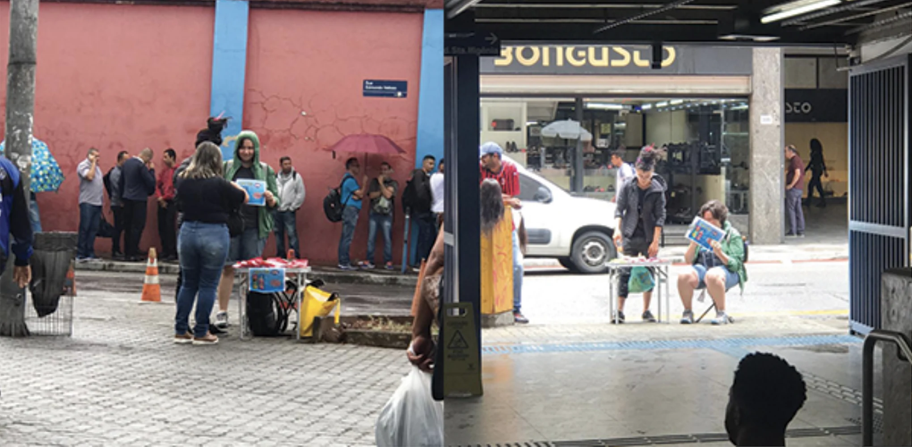
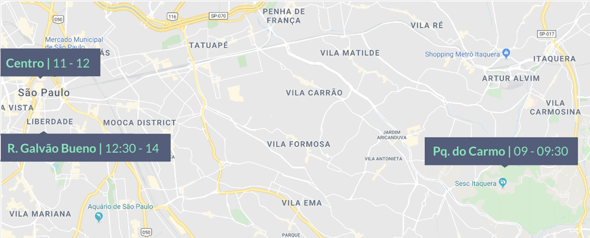
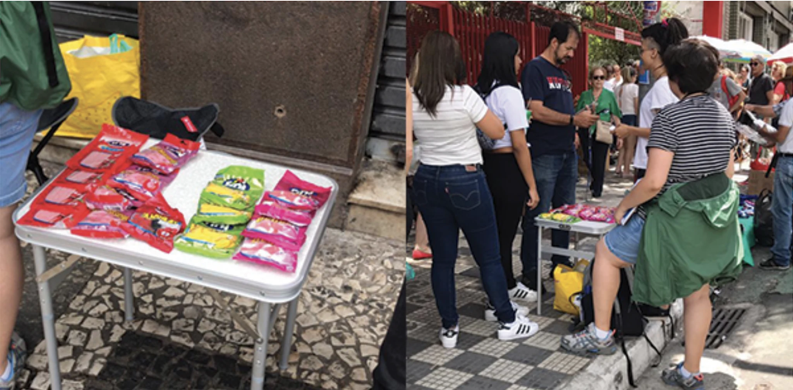

POS – Guerrilla
I was the UX responsible for leading the Guerrilla Research for a new payment machine that was being evaluated for a future release by PagSeguro.
The Problem
In December 2019, the Product Team received a machine from Pax named D135, a compact and low-cost machine that promised to be the next hit of the company, especially among street vendors and small sellers.
The machine didn't have a screen or a keyboard and that made the team raise many questions about its viability on the market. We were mainly concerned about the safety of the customers of our clients because the machine required card pins to be typed on the vendor's smartphone.
In 2019, Brazil experienced a high number of frauds involving payment machines and contactless credit cards, especially during the Carnival where people tend to be too tipsy to pay attention to what they are doing.
So we came up with our guiding question:
"Would people feel safe when putting their card's pin on the seller's smartphone?"
I received the challenge to understand how our clients would react to this very disruptive model and, along with the product team, analyzed its feasibility for a release. I was responsible for:
- Planning the entire research strategy
- Guaranteeing that we had all the necessary assets and equipment to execute the research
- Conducting the interviews and recording data (both video and audio)
- Analyzing the data and compiling it into a report for the product team
Planning
First I needed a plan to test the machine with real people since the prototype was not functional and we didn't have much time to plan a complicated usability test. I received support from the Research Operations team to plan the research.
The plan was as follows:
*Two people would pose as street vendors using the guerrilla research method ;
In the meantime, I would be one of the vendors along with our graphic designer
The (fake) street vendors would be located in strategic locations in the city of São Paulo as central regions and more distant locations in the North and East regions;
We decided to pick places far from the wealthier neighborhoods to diverse our sample and feedback
We selected some popular candies as a product for sale, as it is widely known and has a low cost;
The vendors would only accept credit card payments, to force the interaction of the customers with the D135 machine;
Goal is to interview between 30 and 50 people;
Our objective was to cross the data between the regions and better understand the customer behavior in those areas
Record the whole interaction and then reveal that it was staged, asking for permission to proceed with an interview;
We used Lookback to record both the screen and the face of the customer while interacting with the vendors. We also used an extra camera, dangling from one researcher's neck, to record everything from another angle.
Build a prototype for a smartphone, to simulate a sales flow.
We used Protopie to prototype the Payment Process.
*Guerrilla is a research method carried out in public spaces without requiring a rigorous recruitment process, however, planning is necessary.
Execution
We separated the morning period from the 24th and 25th of January to carry out the research.
Day 01 | January 24th

Despite the pouring rain and therefore very little flow of people in the area, we were approached by at least 20 people but they all wanted to pay with cash, claiming that they did not have a card. We were able to interview 7 people who happened to have a debit or credit card.
We were sharing space with other street vendors who were curious about us and especially friendly, giving us tips on how to survive on the streets as a salesman.
When we moved to a parallel street, after the rain stopped, we had to run from the police 2 times

Day 02 | January 25th (São Paulo's anniversary)

Our first stop was at Parque do Carmo in the very far East of São Paulo. However, there was not enough footfall at the park entrances. We decided to return to Downtown, hoping for a concentration of people since there was going to be an event for São Paulo's Anniversary.
Unfortunately, due to police raids, we had to keep moving from street to street. With no success, we had to go to a close neighborhood called Liberdade, settling our tablet at the bridge on Rua Galvão Bueno. We only managed to do 1 interview that day.
While we stayed in the Downtown area, we had to run from the police 3 times

Setup
We built a prototype with Protopie, focusing on the payment experience from digital payment machines already on the market. We were able to mock the experience of inputting the price, asking for the password, and even "processing payment" loading screen.
At the end of the payment process, we showed that the price was R$ 0,00 and everyone got confused or surprised.
To record both the screen and face of our customer we used Lookback. Everything ran smoothly with no connection or communication problems.
Check out one of the recordings:
Learnings and Takeaway
Unfortunately, I can't disclose the results. We didn't reach the goal because of weather conditions and the massive amount of people who don't use cards in their daily routine (also running from the police was quite bad).
But I learned a lot with the whole process leading this research, from planning to executing.
1. Planning takes time
Being my first time leading this kind of research I understood how much time and effort it takes to bring everyone together, align everything, and be prepared for the execution. You get cold feet, thinking that everything can go wrong, and also excitement for the results you're going to gather.
2. Sometimes things don't go as planned
And you need to adapt. It really can be anything - from making a bad decision in how I dressed to being fooled by the weather channel. You need to be prepared for any inconvenience and think about how to come over and still execute your plan.
3. Leaving the office is important
I was so used to carrying out surveys and interviews in the usability test laboratories. The furthest I had gone was visiting our users at their places and stores. But being a street vendor and observing what the customers were going through was priceless.
4. Meeting your users to learn their stories
In two days, we were able to witness all sorts of things that happened in the streets. We saw different types of goods being sold, we were warned by fellow street vendors when we should run from the police or where we should stay, and we met some passersby who tried to help our business by donating some coins to us. It was magical how people get together when the goal is survival.
5. You can't do research alone
I had the help from so many talented people to make this project come true. From the design team to the marketing; from thinking about where to go to what to sell. Everyone contributed with something that made the whole the best we could give.